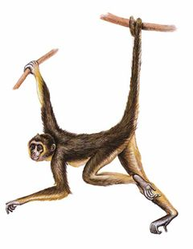
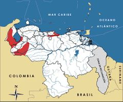

Ateles hybridus
| Mono araña del norte | |
|---|---|
|  | |
| Riesgo de extinción | |
 En peligro (UICN) | |
| Clasificación científica | |
| Reino: | Animalia |
| Filo: | Chordata |
| Clase: | Mammalia |
| Orden: | Primates |
| Familia: | Atelidae |
| Género: | Ateles |
| Especie: | Ateles hybridus |
| Nombre binomial | |
|
Ateles hybridus Gray, 1872 | |
| Distribución | |
|
 Mapa de distribución de Ateles hybridus | |
Contenido
Información de Evaluación
- Categoría y Criterio Regional: En Peligro A2cd+3cd
- Fecha de Evaluación Regional: 2015
- Evaluadores: Jesús Morales-Campos y Ariany García-Rawlins
- Categoría y Criterio Global: En Peligro Crítico A2cd+3cd
Justificación
Evaluaciones Previas
1999: En Peligro (EN)
2008: En Peligro (EN)
Información General
Nombres comunes
Marimonda, mono araña, mono araña del norte, mono frontino, frontino, manguilla, mangalarga, sugshá (barí), sugshaa (barí), variegated spider monkey, brown spider monkey (Bodini y Pérez-Hernández 1987, Bodini 1989, Linares 1998, Lizarralde 2002, Morales-Jiménez et al. 2008, Duque 2011, Duque 2013, Palacios, E. et al. 2014).
Notas taxonómicas
Sinónimos
Descripción
Es un primate de gran tamaño (~8 kg) con un parche blanco en la frente. Sus ojos, en ocasiones, son de color azulado. El pelaje es largo y lacio. Es de un marrón a marrón grisáceo en la región dorsal y marrón claro a marrón amarilento y beige en la zona ventral. Cola larga y prensil, así como piernas y brazos alargados con manos sin pulgar (Linares 1998, Defler 2003). Diurno y frugívoro, forma parte de la lista de los 25 primates más amenazados del mundo (B. Urbani obs. pers.).
Distribución
Ateles hybridus se consigue de forma discontinua o disyunta en Venezuela. El norte de su distribución, se localiza al sureste de la Cordillera de la Costa en el estado Miranda y es posible que en Vargas. A su vez se encuentra a ambos lados de la cordillera de los Andes (Apure, Barinas, Mérida, Táchira, Trujillo y Zulia), así como en los bosques piemontanos de Ticoporo, San Camilo y Caparo. En el extremo occidental, se localiza en las tierras bajas del sur del lago de Maracaibo, en los Andes y en la sierra de Perijá. Ocupa un intervalo altitudinal de 20 a 700 m. (Mondolfi y Eisenberg 1979, Bodini y Pérez-Hernández 1987, Bodini 1989, Congdon 1996, Linares 1998, Cordero-Rodríguez y Biord 2001, Portillo-Quintero y Velásquez 2006, Duque 2007, Morales-Jiménez et al. 2008, Urbani et al. 2008, Duque 2009, Rivas-Rojas 2009, Duque 2011, Duque 2012, Duque 2013, B. Urbani obs. pers.). En fecha reciente, se registró un reporte de posible presencia histórica de la especie en la frontera entre los estados Trujillo y Lara (B. Urbani obs. pers.). La especie habita en bosques húmedos montanos y selvas altas primarias, así como en semideciduos de tierras bajas. Si bien es típicamente reportada para bosques continuos, Duque (2012, 2013) la observa en un área de bosque muy fragmentado (Duque 2012, Duque 2013). D. Lew (com. pers.) estima que para: a) la región de Barlovento del estado Miranda su área podría abarcar cerca de 12.000 km2; b) el flanco oriental-llanero de los Andes se distribuye en cerca de 40 fragmentos, teniendo diez de estos entre 700 y 1800 km2 de área, y c) en la región de la cuenca del lago de Maracaibo su distribución se reduce a menos de 15.000 km2 en diez fragmentos. El mismo investigador (D. Lew com. pers.) sugiere que la transformación drástica de su hábitat potencial pudiera muy pronto dejar menos de 20.000 km2 de bosque en potencia ocupado por esta especie, estando en su mayoría ya fragmentado. Su distribución a nivel mundial se restringe a Colombia y Venezuela.
- Sistema: Terrestre
- Bioregión:
- Intervalo altitudinal (m): 20-700
- Endémica: No
Situación
A la fecha no se ha publicado ningún estudio detallado sobre su ecología y comportamiento en nuestro país. Sin embargo, Congdon (1996) realiza un breve prospecto sobre la conducta de Ateles hybridus en la Reserva Forestal Caparo, donde en la actualidad Duque (2011, 2012, 2013) desarrolla un programa de estudio sobre estos tópicos. De igual manera, Duque (2007, 2009) proporcionó una lista de árboles frutales potencialmente utilizables por la especie en el parque nacional Waraira Repano (El Ávila). Se han efectuado otros reconocimientos de campo del primate en su área de distribución centro-norte (Mondolfi y Eisenberg 1979, Cordero-Rodríguez y Biord 2001, Rivas-Rojas 2009, B. Urbani obs. pers.). En la sierra de Perijá, Portillo-Quintero y Velásquez (2006) realizaron un estudio de viabilidad de la especie, y Lizarralde (2002) uno sobre etnoprimatología barí, indicando que es el mono araña preferido para cacería, y de hecho su nombre en lengua barí «shugshaa» significa «carne».
- EOO (km2): Temporalmente sin información
- AOO (km2): Temporalmente sin información
- Tendencia Poblacional: Decreciendo
Amenazas
Diferentes amenazas parecen direccionar a Ateles hybridushacia serios problemas, tales como pérdida y fragmentación de bosques por acciones antrópicas (actividades agropecuarias y madereras), cacería, utilización como mascota, incremento de ocupación de la tierra nativa de la especie por poblaciones humanas (en especial alrededor de regiones urbanas y pecuarias) y falta de divulgación de información sobre su situación a nivel local, regional y nacional. También se desconoce si existe alguna amenaza potencial debido a enfermedades infecciosas, sobre todo en aquellas poblaciones del primate cercanas a áreas de ocupación humana. En el estado Zulia y el piedemonte de la sierra de Perijá su hábitat ha sido en particular devastado por las actividades agropecuarias (B. Urbani obs. pers.). Para esa región, Portillo-Quintero y Velásquez (2006) realizaron un estudio donde se determinó que a pesar de que la extensión de bosque en la zona es aún amplia (813.257 ha), solo 30% está relativamente bien conservada o protegida, y el resto se halla afectada por la rápida diseminación de poblaciones humanas, lo que implica un consecuente incremento en la deforestación y fragmentación, y pone en riesgo cualquier posibilidad de creación de corredores forestales. Lizarralde (2002) reporta que en Perijá, los monos arañas están entre los animales de interés de caza. En el centro de Venezuela, áreas que fueron reportadas con estos primates (Cordero-Rodríguez y Biord 2001) luego fueron revisitadas por Duque (2007, 2009) sin éxito de hallazgos; por el contrario, el lugar se observó transformado en bosques secundarios. En la misma región, B. Urbani (obs. pers.) frecuentó lugares alrededor de un área protegida con avistamientos confirmados de estos monos (parque nacional Guatopo), así como áreas protegidas del norte de Venezuela, sin confirmaciones de los mismos (monumento natural Cueva Alfredo Jahn, y parques nacionales Henri Pittier, San Esteban y Guaraira Rapano); observando que en las afueras los espacios se encuentran transformados por actividades de agricultura, en bosques secundarios o en asentamientos humanos. El flanco este de los Andes, donde se encuentran las selvas de San Camilo y Ticoporo, así como Caparo (Duque 2012, 2013), están también bajo fuertes presiones por acciones de madereros y actividades pecuarias. Boher (2007, en Duque 2007) indica que es posible que el hábitat de la especie se pudiera haber reducido a la mitad en los últimos setenta años. Esto explicaría, en parte, su distribución discontinua (Cordero-Rodríguez y Biord 2001, Duque 2007). En la sierra de Perijá, la cacería estaría provocando extinciones locales (B. Urbani obs. pers.), y otras presiones antrópicas, fundamentalmente debidas a la deforestación (Portillo-Quintero y Velásquez 2006). Es del todo necesario considerar que el intervalo entre partos para A. hybridus es en particular dilatado, lo cual puede aumentar su susceptibilidad a extinciones locales.
Conservación
Se requiere seguir fortaleciendo los parques nacionales donde se halla (e.g. Guatopo y Sierra de Perijá). Además, debe evitarse la extracción maderera ilegal. Igualmente, sería ideal estimular a organizaciones conservacionistas para que adopten a Ateles hybridus como especie bandera, así como incrementar los programas de educación en torno a la especie. Los estudios de ecología básica y comportamiento tienen que expandirse. El tráfico y cacería habrán de evitarse y penalizarse utilizando los medios legales existentes. A nivel internacional está incluida en el Apéndice II de la Convención sobre el comercio internacional de especies amenazadas de fauna y flora silvestres (Urbani et al. 2008, Cites 2014).
Autorías
Autores originales
Bernardo Urbani
Colaboradores
Ilustrador
Astolfo Mata
Referencias
- Bodini, R. (1989). Distribución geográfica y conservación de primates sub-humanos en Venezuela. Páginas: 101-114. En: Saavedra, C. J., Mittermeier, R. A. y Santos, I. B. (Eds.). La primatología en Latinoamérica: anales del Simposio de Primatología del IX Congreso Latinoamericano de Zoología, 9-15 oct. 1983, Arequipa, Perú. World Wildlife Fund-US. Washington, D. C., USA.
- Bodini, R. y Pérez-Hernández, R. (1987). Distribution of the species and subspecies of cebids in Venezuela. Páginas: 231-244. En: Patterson, B. D. y Timm, R. M. (Eds.). Studies in Neotropical Mammalogy. Fieldiana Zoology, n.s., 39. Field Museum of Natural History. Chicago.
- Cites. (2014). Apéndices I, II y III (válidos desde el 14 de septiembre de 2014). Convención sobre el Comercio Internacional de Especies Amenazadas de Fauna y Flora Silvestres (CITES). 47 pp.
- Congdon, E. R. (1996). A preliminary study of distribution, habitat use, and activity patterns of primates within Caparo Forestry Reserve, Venezuela. Unpublished report to Cleveland Metro Park Zoo/University of the Andes-Mérida/PROFAUNA/MARNR. Caracas, Venezuela.
- Cordero-Rodríguez, G. A. y Biord, H. J. (2001). Distribution and conservation of the spider monkey (Ateles hybridus) in the coastal range of northern Venezuela. Neotropical primates 9: 8-11.
- Defler, T. (2003). Primates de Colombia. Conservación Internacional-Colombia. Bogotá, Colombia. 543 pp.
- Duque, D. (2007). Abundancia y distribución del mono araña Ateles hybridus en una región del sur-este del Parque Nacional el Ávila. Reporte sin publicar para Provita/Programa IEA. Caracas, Venezuela.
- Duque, D. (2009). Abundancia y distribución del mono araña Ateles hybridus en una región del sureste del Parque Nacional el Ávila, Distrito Capital. Página 101. En: Giraldo, D., Rojas-Suárez, F. y Romero, V. (Eds.). Una mano a la naturaleza. Conservando las especies amenazadas venezolanas. Provita y Shell Venezuela S. A. Caracas, Venezuela.
- Duque, D. (2011). El mono araña: conociendo al primate neotropical más amenazado. Revista Rio Verde 4: 141-150.
- Duque, D. (2012). Los monos araña de la Reserva Forestal Caparo. Natura Digital. Disponible en www.natura-digital.com/index.php/javascript/historia-natural/94-fauna/125-los-monos-ateles.
- Duque, D. (2013). Spider Monkey Conservation Project. Disponible en spidermonkeyproject.org.
- Linares, O. J. (1998). Mamíferos de Venezuela. Sociedad conservacionista Audubon. Caracas. 691 pp.
- Lizarralde, M. (2002). Ethnoecology of monkeys among the Barí of Venezuela: Perception, Use, and Conservation. Páginas: 85-100. En: Fuentes, A. y Wolfe, L. D. (Eds.). Primates Face to Face: The Conservation Implications of Human-Nonhuman Primate Interconnections. Cambridge University Press. Cambridge.
- Mondolfi, E. y Eisenberg, J. F. (1979). New records of Ateles belzebuth hybridus in northern Venezuela. Páginas: 93-96. En: Eisenberg, J. F. (Ed.). Vertebrate ecology in the northern Neotropics. Smithsonian Institution Press. Washington, D. C.
- Morales-Jiménez, A. L., Link, A., Stevenson, P. y Urbani, B. (2008). Ateles hybridus ssp. hybridus. The IUCN Red List of Threatened Species. Version 2013.2. Disponible en www.iucnredlist.org.
- Palacios, E., Morales, A. L., Link, A. y Urbani, B. (2014). Variegated or brown monkey Ateles hybridus I. Geoffroy, 1829. Páginas: 73-74. En: Mittermeier, R. A., Wallis, J., Rylands, A. B., Ganzhorn, J. U., Oates, J. F., Williamson, E. A., Palacios, E., Heymann, E. W., Kierulff, M. C. M., Long, Y., Supriatna, J., Roos, C., Walker, S., Cortés-Ortiz, L. y Schwitzer, C. (Eds.). Primates in peril: The World's 25 most endangered primates 2012-2014. IUCN/SSC Primate Specialist Group, International Primatological Society, and Conservation International. Arlington.
- Portillo-Quintero, C. y Velásquez, Y. (2006). Disponibilidad y estado del hábitat de tres especies de primates amenazadas de extinción en la Sierra de Perijá: Generación de información biogeográfica base para el diseño de proyectos de investigación para la conservación (Ateles hybridus, Cebus albifrons y Aotus trivirgatus). Reporte sin publicar para Provita/Programa IEA. Caracas, Venezuela.
- Rivas-Rojas, E. S. (2009). Estatus poblacional y conservación del mono araña (Ateles hybridus) en la región de Barlovento, estado Miranda. Página 102. En: Giraldo, D., Rojas-Suárez, F. y Romero, V. (Eds.). Una mano a la naturaleza. Conservando las especies amenazadas venezolanas. Provita y Shell Venezuela S. A. Caracas, Venezuela.
- Rodríguez, J. P. y Rojas-Suárez, F. (1999). Libro Rojo de la Fauna Venezolana, segunda edición. PROVITA, Fundación Polar. Caracas. 444 pp.
- Rodríguez, J. P. y Rojas-Suárez, F. (Eds.) (2008). Libro Rojo de la Fauna Venezolana, tercera edición. Provita y Shell Venezuela, S. A. Caracas, Venezuela. 364 pp.
- Urbani, B. (2015). Mono araña norteño,Ateles hybridus. En: J.P. Rodríguez, A. García-Rawlins y F. Rojas-Suárez (eds.) Libro Rojo de la Fauna Venezolana. Cuarta edición. Provita y Fundación Empresas Polar, Caracas, Venezuela. Recuperado de: animalesamenazados.provita.org.ve/content/mono-arana-norteno Vie, 09/03/2018 - 08:12
- Urbani, B., Morales, A. L., Link, A. y Stevenson, P. (2008). Ateles hybridus. The IUCN Red List of Threatened Species. Version 2013.2. Disponible en www.iucnredlist.org.